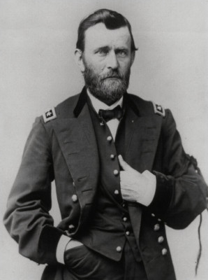

Ulysses S. Grant: American General and President
Ulysses S. Grant was a famous American general and the 18th president of the United States. He was born in 1822 and became a key figure during the American Civil War, which took place from 1861 to 1865. Grant led the Union forces (the Northern states) to victory over the Confederate forces (the Southern states) in the Civil War.
One of Grant's most important accomplishments was accepting General Robert E. Lee's surrender at Appomattox Court House in 1865, effectively ending the Civil War. People admired Grant for his military skills and determination.
Later, in 1869, he became the president of the United States and served two terms. During his presidency, he worked to rebuild the country after the Civil War and promote civil rights for African Americans. Grant is remembered as a heroic general and an important leader in American history.
A Short Biography: Ulysses Grant
Meet Ulysses S. Grant, a remarkable figure in American history! Born on April 27, 1822, in Point Pleasant, Ohio, Grant grew up with a love for horses and adventure. Little did he know, he would become one of the most important leaders in the United States.
As a young boy, Ulysses had a passion for horses, and he even became a talented rider. He attended the United States Military Academy at West Point, where he learned important skills that would help him in the future.
Grant played a crucial role in the American Civil War, a time when the northern and southern parts of the country were in conflict. He led the Union Army to victory, showing bravery and determination. His nickname, "Unconditional Surrender Grant," reflected his determination to win without any conditions.
After the war, Ulysses S. Grant became the 18th President of the United States. As president, he worked hard to bring the country together and heal the wounds caused by the Civil War. He also fought for the rights of all citizens, regardless of their background.
One of Grant's most lasting achievements was his support for civil rights. He believed that everyone should be treated fairly and with respect, regardless of their race or background. His efforts paved the way for positive changes in the country.
Ulysses S. Grant wore many hats throughout his life – from a skilled horse rider to a successful military leader and, finally, a dedicated president. Even though he faced challenges, Grant always stood firm in his beliefs and worked hard for the good of the nation.
Ulysses S. Grant's legacy lives on, reminding us that with determination, bravery, and a commitment to justice, anyone can make a lasting impact on the world.
Timeline
1822: Grant was born in Ohio.
1843: He graduated from the United States Military Academy at West Point.
1848: Grant fought in the Mexican-American War.
1861-1865: He played a big role in the Civil War, leading the Union army to victory against the Confederates.
1869-1877: Grant became the 18th President of the United States.
1885: Ulysses S. Grant passed away, leaving behind a legacy of courage and leadership.

Impact on the World
Civil War Hero: Grant's excellent military skills helped the Union win the Civil War. He fought to end slavery and bring the country back together.
Presidential Achievements: As President, he worked hard to protect the rights of African Americans and supported policies for the country's growth.
Writing Talent: Grant wrote his memoirs while battling cancer. His book is considered one of the best works by any American president and shows his determination and love for his country.
Fun Facts
Awesome Nickname: Grant's nickname was "U.S. Grant," which stood for Ulysses Simpson Grant. He didn't actually have a middle name, but the "S" was added by mistake, and it stuck!
Horses and Cigars: Grant loved horses and cigars. He was often seen puffing on a cigar while riding his favorite horse, Cincinnati.
Quiet Hero: Even though he was a great leader, Grant was known for being quiet and not bragging about his achievements.
Here are a few recommendations:
"Who Was Ulysses S. Grant?" by Megan Stine
This book is part of the "Who Was?" series, which offers engaging biographies of historical figures in a format suitable for elementary readers.
"Ulysses S. Grant: Unlikely Hero" by Janet Benge and Geoff Benge
A part of the Christian Heroes: Then & Now series, this book provides a simplified narrative of Grant's life, focusing on his journey from a humble background to becoming a significant historical figure.
"Ulysses S. Grant (Rookie Biographies)" by Wil Mara
This book is designed for early readers and provides basic information about Grant's life and achievements in an easy-to-understand format.
"Meet Ulysses S. Grant" by Ormonde De Kay Jr.
This book is part of the Landmark Books series, which offers biographies for young readers. It covers Grant's life and his role in the Civil War.
"I Am Ulysses S. Grant" by Brad Meltzer
A part of the "Ordinary People Change the World" series, this book uses a comic book style to present the life of Ulysses S. Grant in an accessible way for young readers.
Before introducing any book to elementary students, it's advisable for educators or parents to review the content to ensure that it aligns with their values and educational goals. Additionally, discussing the material with students and supplementing it with age-appropriate discussions can enhance their understanding of historical figures like Ulysses S. Grant.